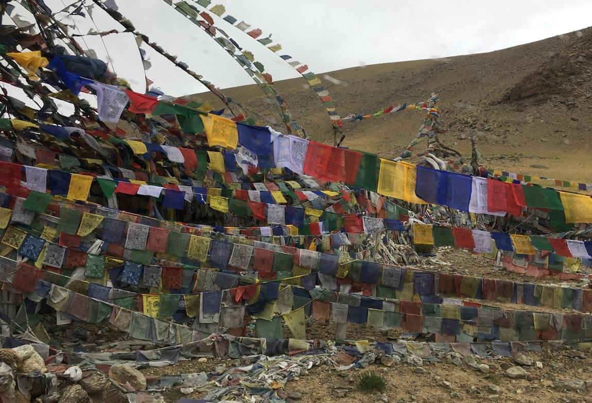
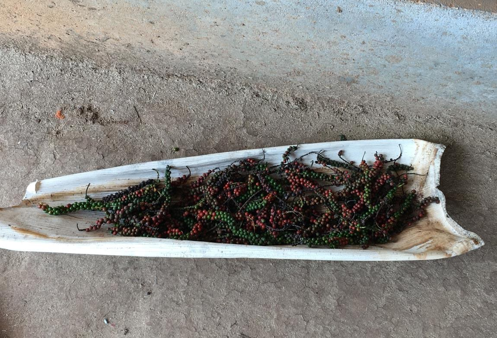
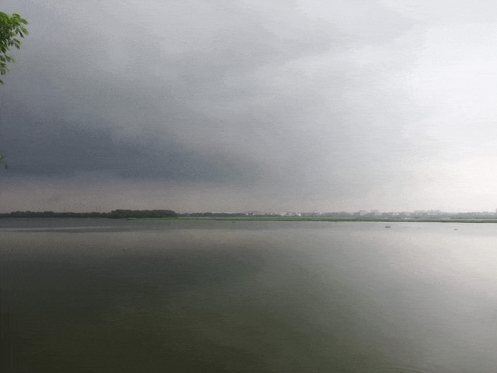
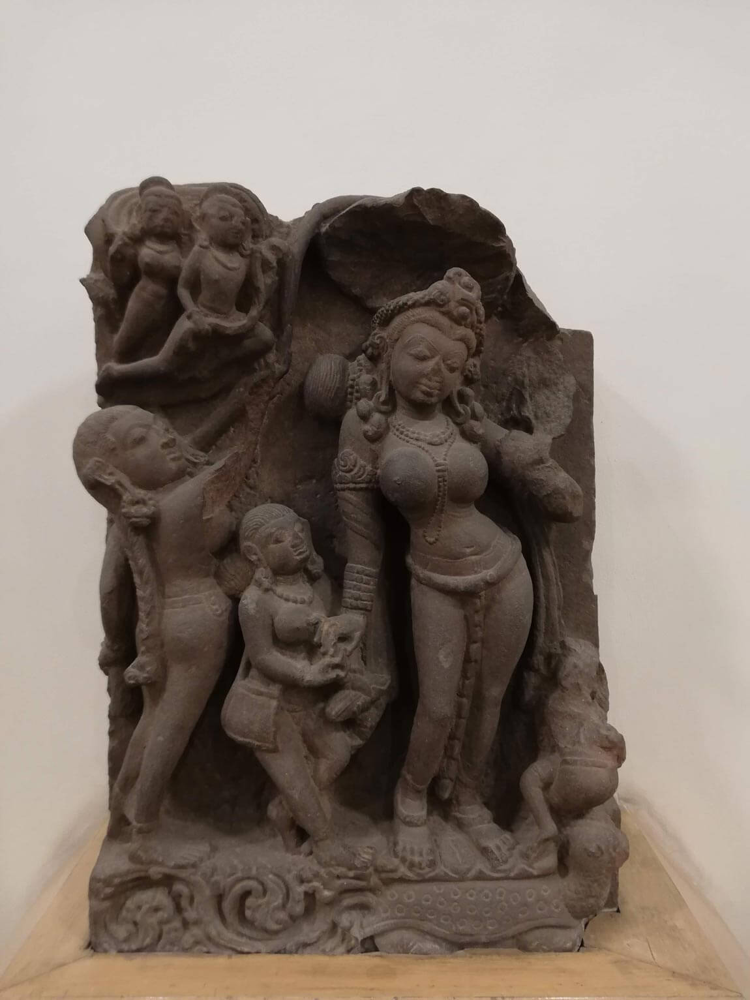
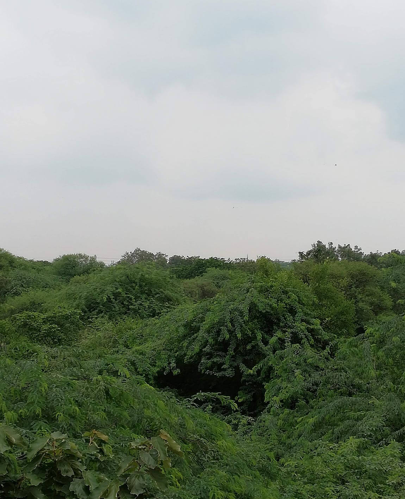
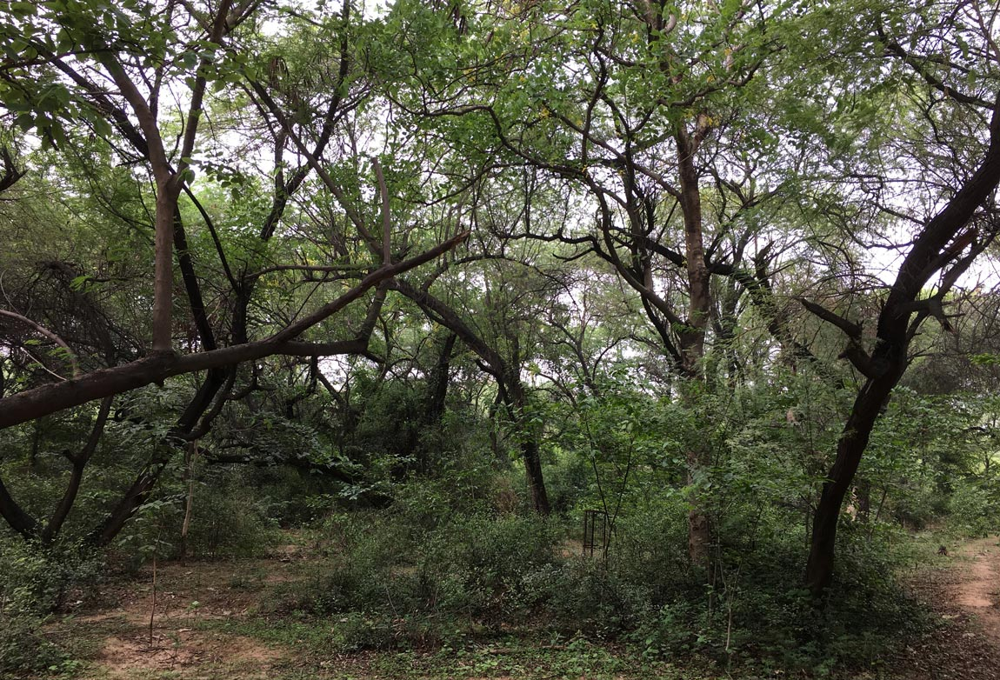
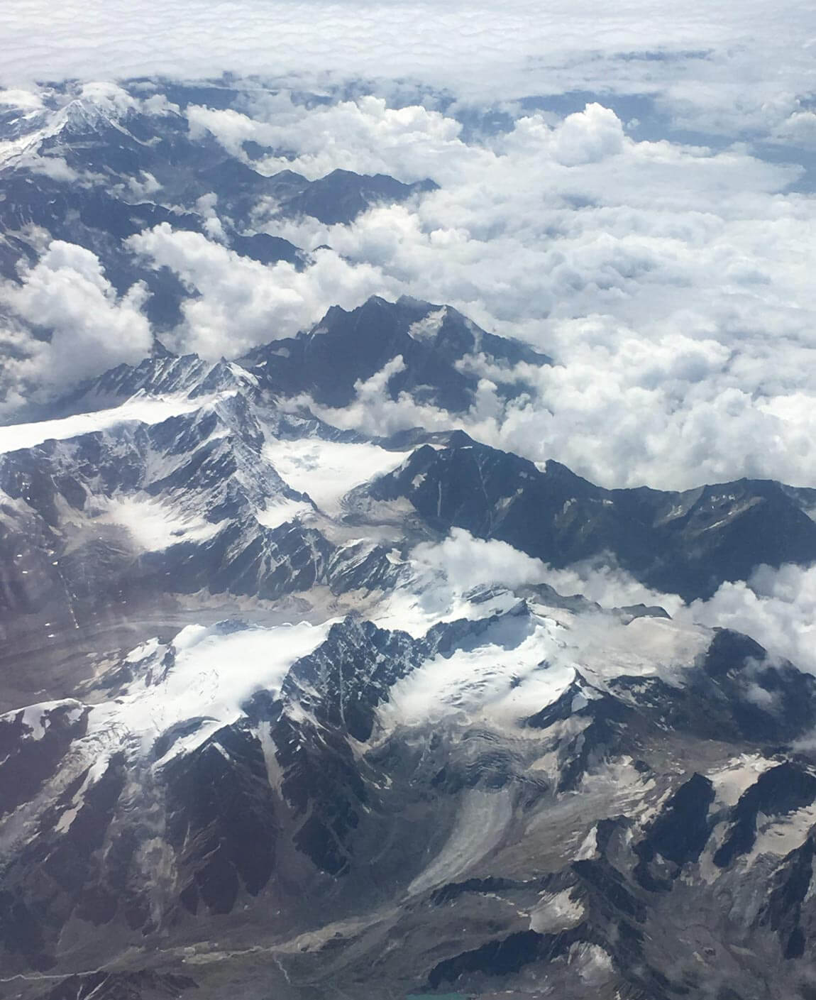
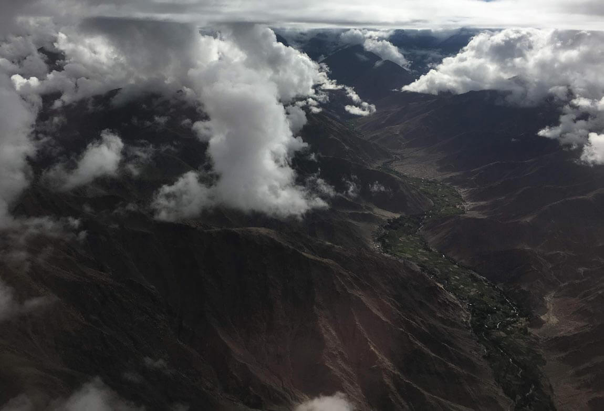
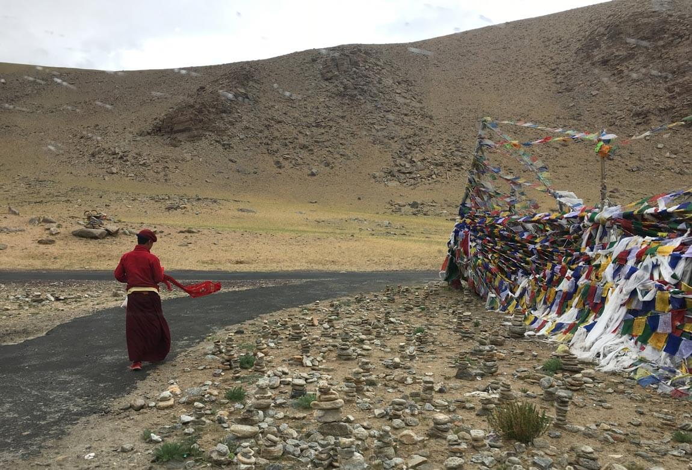
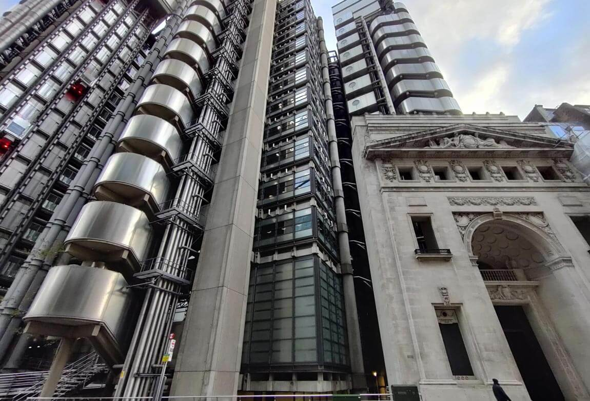

Making sense of the monsoon
as a matter of air
The monsoon as a matter of air permeates beyond its seasonal temporality in enlivening what many of us consider as life. It grasps forms, stories, knowledge, entanglements and encounters in drenching them with atmospheric claims. Offered here are glimpses into sense making exercises during my PhD fieldwork and writing between 2017 and 2020.
Fly ash conspiracies
The accompanying pictures are visual glimpses of a closed coal-fired power station in New Delhi. Alongside its distribution of fly ash and energy into the atmosphere, its presence signals the hum of industry. Although it’s now closed down, I recollect passing by the station on dense, rainy monsoon nights, and the glow above the large cooling tower would glimmer in eeriness. It distributed a mimetic viscerality: volcanoes, boiling water and the work of wholesale steam surrounded by the partial darkness of the highway. Fly ash conspiracies are both atmospheric and terrifying.
Badarpur station from the highway, Delhi, August 02, 2019.
Haze
The aerosol haze one experiences in places like Delhi plays a broad role in disturbing monsoonal rhythms. Aerosols increase the complexity of meteorological and atmospheric modelling, play a key role in influencing the way the monsoon is experienced and change monsoonal futures. Contemporary urban political discourse privileges the haze as a human health hazard. The haze as a material story however takes us to a broader set of implications and speculative futures that do not just destabilise the atmosphere for breathing life-forms but conspire the weird and eerie collapse of seasonal thermodynamic systems. While being situated within it as a breather in pain, the haze is therefore a material interlocutor for the unknown, for monsoonal breakdown to come.
A particularly painful respiratory evening in north Delhi, December 2018.
Pepper
Placed in a white leaf resin of the areca palm are some peppercorns that my grandfather picked early one morning during a casual stroll around his farm. I had always found it interesting that he never spoke of pepper as something that they grew; it just happened to be there. Its vines made their presence known through their generous embrace of palm trees. Black pepper is native to South India and is intimately part of its monsoonal ecologies. Pepper is a life-form that flourishes in wetness, and climbs trees to find the sky. Some of the oldest western stories of monsoon winds trace back to the story of pepper – its trade, mobility and consumption. Monsoon winds bring it into conversations between worlds. Pepper occupies a unique interlocutory temporality which speaks to the history of wealth, culture, trade, extraction, caste, navigation and civilisation. Most importantly, pepper is monsoonal. It mobilises flavour and stories.
Some peppercorn picked by N. Ganapathy during a morning stroll, South Karnataka, December 30, 2018.
Migrations
To escape the harsh winter in Siberia, Heuglin’s gulls migrate to India every year where they can be spotted on the Yamuna and Ganga rivers. A much loved spot for gull watching in Delhi is on the ghats. Ghat is a figure of description that represents valleys, passages, forests and embankments. In this instance, ghat refers to the steps and platforms on the Yamuna River that are also a site of cremation. Monsoon rains rejuvenate the river each year, increasing the level of oxygen, biotic life and nutrition in its waters and producing a favourable environment for the gulls. Environmental contamination and anthropogenic consumption has impacted this annual migration. Yet the monsoon and the Yamuna in Delhi, even in its altered state, offer refuge to these birds and several other species as part of their annual journey south.
Delhi Ghat, December 17, 2018.
Yamuna
The Yamuna is not only a river but also a deity. While scholars have debated the cultural separation of rivers between natural, scientific, spiritual and more-than-human categories, I want to stay with the cosmological idea of the Yamuna as the daughter of Surya, the sun. By storying the water of the earth as the daughter of the sun, truth telling and story telling become wildly interchangeable. My proposal is that some generosity and colonial detuning holds potential to unpack the work of categories, just like the Yamuna which simmers below the city and the city which floods the river with industry and anthropogenic activity. The cosmological helps to understand that a conversation with the Yamuna is not too different from the political, economic work of treating, contaminating, barraging, polluting, damning, bridging, canaling, drilling and mining it.
 A depiction of the Yamuna from the sixth century AD Madhya Pradesh at the National Museum, and pictures of the Yamuna River from Okhla.
Once a monsoon forest
A plant called Prosopis juliflora grows throughout Delhi. It was introduced by the British in the early twentieth century as part of a botanical experiment and has since spread throughout India. Its ability to ward off other species, thanks to its thorns and the enzymatic compounds in its roots, and its ability to tap into the deep water table has made it a much hated species. Unlike arid monsoon forests, which are intimately attuned to seasonal rhythms and changes, Prosopis juliflora is green throughout the year. It has become the monsoon forest in/of the Anthropocene, in the sense that it refuses to be uprooted by policy and practice. It simply grows back. In the process, residents, agriculturalists and scientists are conspiring new ways to live with, think with, and negotiate with it.
 City forests, Delhi, 2018 and 2019.
When it really, really rains
Sometimes it really, really rains. For a brief moment, if you listen carefully, the stories of mixed emotions and sensorial registers that one has heard from one’s elders begin to make sense. Under the sheer density of rain, one is compelled to meditate into the sound not by choice but by sheer circumstance. When it rains in the city, urban materiality vibrates. One thinks of kin on the street, on the way home, going somewhere. It’s a weird confluence of joy and fear. It frames the political conversation of life for days to come. When it really, really rains. In an act of luck and serendipity, the air showered immensely just as I walked into my host’s home the day I made this recording.
When the air explodes into water, Delhi, 2018, Chennai 2017.
Himalayan Plateaus
While geologists and writers remind us that the Himalayas invented the monsoon when they emerged eight to sixteen million years ago, in contemporary history the upper Himalayan Plateau has rarely seen rain. In recent years though, cloud bursts in the high altitude region of Ladakh have been intensifying during the monsoon, producing human disasters in a landscape that isn’t used to rain. The changing monsoon climate has also been influencing the northward migration of different species. The valleys and upper Himalayan Plateau are crucial spaces of change that have wide ranging effects on the monsoon system. Melting glaciers, plantations, military modernity and anthropogenic aerosol ecologies are playing important roles in the determination of monsoonal futures.
 Melt of Himalayan forms, airborne over Ladakh, July 24 and 31, 2018.
Elements
In Mahayana and Ladakhi-Tibetan cosmology, the Lung Ta, or horizontal prayer flags sustain and expand the work of prayer and good fortune. They represent the five elements (Sky, Air, Water, Fire and Earth) through the figure of a mythical wind horse. They are part of an interwoven cosmological tradition and research practice that theorises the earth and existence from the position of Himalayan thought. Despite their seeming ubiquitousness, prayer flags are highly temporal objects and are ritually replenished, replaced, re-written and burnt, at one with the impermanence of the wind that enlivens them.
Lung Ta scattering, Ladakh, July 24 and 28, 2018.
Risk
This is Lloyds of London, one of the world’s largest risk marketplaces. On this same site on Leadenhall Street stood the East India House, the headquarters of the British East India Company, demolished in 1861. It had commissioned the first colonial meteorological observatory in Madras in 1791. Meteorological observatories played a key role in developing a colonial emperics of weather that enabled administrations to theorise life in terms of risk and extractive profitability. As theorists from London penned an understanding of the monsoon, notions of racialised tropicality, disease and vitality played confluential roles. Meteorology today is the basis of understanding weather futures which influence risk contracts and plans interested in the extraction of living systems for profit.
Lloyds building in the City of London, November 12, 2020.
Text: Harshavardhan Bhat.
Design: Jonathan Cane.
Photographs and videos: Harshavardhan
Bhat.
Audio-visual compilation: Harshavardhan
Bhat and Lindsay Bremner.